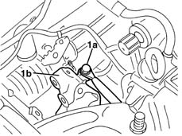
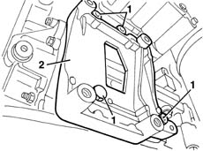
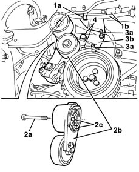
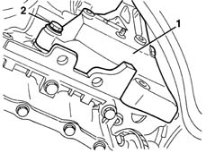
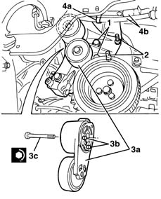

5040A26 compressor mount - r r
- Path
- Procedures > 50 AUXILIARY UNITS > 5040 AIR CONDITIONING CASING AND COMPONENTS > 5040A air conditioner coolant circuit > 5040A26 compressor mount - r r
- Kind
- repair procedure (removal / refitting; the operation number is the code)
- Applies to
- all engines; all production periods
- Interactive page
- https://sloeber94.github.io/elrnDB-lYpsln/en/#/2429306
Applies to: engines: 1.2 8v, 1.2 16v, 1.4 16v; all production periods
 Removing
Removing
 Refitting
RefittingPlace the vehicle on a lift.
Drain the coolant ( 0010T84 coolant for air conditioning system dehydrate and recharge ).
7055B91 Right front WHEEL ARCH LINER - R.R.
7055B66 Engine compartment DUST SHIELD protection in right front wheel arch - R.R.
5040A20 air conditioner compressor - r+r - includes fluid level check and top up if necessary
1. Disconnect the connection (1a) for the earth lead from the compressor mounting (1b).
 | Name | Connector |
|---|---|---|
1a | Compressor earth |

Applies to: engines: 1.3 JTD; all production periods
Removing
RefittingPlace the vehicle on a lift.
Drain the coolant ( 0010T84 coolant for air conditioning system dehydrate and recharge ).
7055B91 Right front WHEEL ARCH LINER - R.R.
7055B66 Engine compartment DUST SHIELD protection in right front wheel arch - R.R.
1092G10 single engine belt r r
5040A20 air conditioner compressor - r+r - includes fluid level check and top up if necessary
1. Undo the bolts.
2. Remove the mount.

Applies to: engines: 1.2 8v, 1.2 16v, 1.4 16v; all production periods
Raise the car.
1. Release the band (1a) retaining the climate control system pipes (1b) from the bodyshell.
2. Undo the bolt (2a) and remove the moving tensioner (2b), releasing the pins (2c) from the housings.
3. Undo the nuts (3a) retaining the compressor mounting (3b).
4. Undo the compressor mounting retaining bolts.

Applies to: engines: 1.3 JTD; all production periods
Refitting
RemovingCheck that the compressor mounting is not damaged.
1. Reposition the compressor mounting.
2. Tighten the bolts.
5040A20 air conditioner compressor - r+r - includes fluid level check and top up if necessary
1092G10 single engine belt r r
7055B66 Engine compartment DUST SHIELD protection in right front wheel arch - R.R.
7055B91 Right front WHEEL ARCH LINER - R.R.
Repressurize using coolant fluid ( 0010T84 coolant for air conditioning system dehydrate and recharge ).
Remove the vehicle from the lift.
Applies to: engines: 1.2 8v, 1.2 16v, 1.4 16v; all production periods
1. Undo the rear bolt (1a) and remove the compressor mounting (1b).
Applies to: engines: 1.2 8v, 1.2 16v, 1.4 16v; all production periods
Refitting
RemovingCheck that the compressor mounting is not damaged.
1. Reposition the compressor mounting.
2. Tighten the rear bolt fixing the compressor mounting.

Applies to: engines: 1.2 8v, 1.2 16v, 1.4 16v; all production periods
1. Tighten the bolts fixing the compressor mounting.
2. Tighten the nuts fixing the compressor mounting.
3. Place the moving tensioner (3a) in position, engaging the pins (3b) in the housings, then tighten the bolt (3c).
 | Fastening | Component | Ø | Value (daNm) |
|---|---|---|---|---|
3c | Bolt | TENSIONER | M8 x 12.5 | 2.2 |
4. Attach the climate control system pipes (4b) retaining band (4a) to the bodyshell.

Applies to: engines: 1.2 8v, 1.2 16v, 1.4 16v; all production periods
Lower the vehicle.
Connect the connection for the earth lead to the compressor mounting.
5040A20 air conditioner compressor - r+r - includes fluid level check and top up if necessary
7055B66 Engine compartment DUST SHIELD protection in right front wheel arch - R.R.
Topics linked from this page (8)
- 0010T84 coolant for air conditioning system dehydrate and recharge
- 1092G10 single engine belt r r
- 4450B04 right front wheel r r
- 5040A20 air conditioner compressor - r+r - includes fluid level check and top up if necessary
- 5530A10 alternator - r+r
- 7055B66 Engine compartment DUST SHIELD protection in right front wheel arch - R.R.
- 7055B91 Right front WHEEL ARCH LINER - R.R.
- C39 Compressor earth